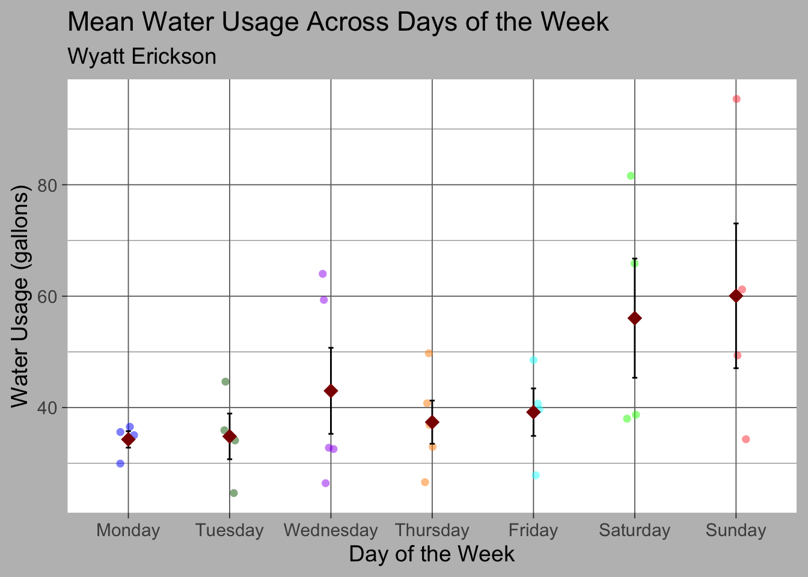
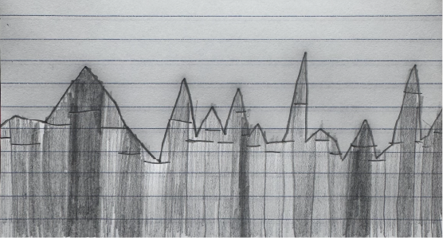

library(tidyverse) #load packages
library(gt)
library(here)
library(janitor)
library(knitr)
water_data <- read.csv("~/Git_/werickson13.github.io/projects/ENVS_193DS_HW3/Data/ENVS193_data.csv") #load in dataENVS-193 DS Homework 3
Homework assignment displaying statistical analysis using RStudio.
Github Repo
Loading Packages
The following code loads in the packages and data that will be used throughout the assignment.
Problem 1. Personal Data
a. Data Summarizing
- I can calculate the mean water usage on each day of the week, and compare those means to one another because I think I may use more water on certain days. Over the weekend I have more free time, so I think I will use more water (for example, taking longer showers, doing more laundry, etc.) on Saturday than other days of the week.
b. Visualization
This code creates a chart displaying the data I collected on daily water usage.
data_c <- water_data |> #use water dataframe
clean_names() |> #clean up column names
mutate(week_day = recode(week_day,#rename values in week_day column
"monday" = "Monday",
"tuesday" = "Tuesday",
"wednesday" = "Wednesday",
"thursday" = "Thursday",
"friday" = "Friday",
"saturday" = "Saturday",
"sunday" = "Sunday")) |>
select(week_day,water_total)#view only day and total water columns
print(data_c) #display selected columns from dataframe week_day water_total
1 Wednesday 32.79375
2 Thursday 40.79125
3 Friday 39.70031
4 Saturday 65.89375
5 Sunday 49.37000
6 Monday 35.05125
7 Tuesday 24.64125
8 Wednesday 63.96875
9 Thursday 36.86750
10 Friday 48.50000
11 Saturday 38.75625
12 Sunday 61.15500
13 Monday 35.59375
14 Tuesday 44.64000
15 Wednesday 32.53250
16 Thursday 32.92875
17 Friday 40.68375
18 Saturday 81.57750
19 Sunday 34.32500
20 Monday 36.56625
21 Tuesday 34.11750
22 Wednesday 26.44031
23 Thursday 49.74125
24 Friday 27.83750
25 Saturday 37.99500
26 Sunday 95.38125
27 Monday 29.94750
28 Tuesday 35.91875
29 Wednesday 59.29375
30 Thursday 26.60875data_c$week_day <- factor(data_c$week_day, #rearrange cagegories to display as Monday - Sunday
levels = c("Monday", "Tuesday", "Wednesday", "Thursday", "Friday", "Saturday", "Sunday"))
ggplot(data_c, aes(x = week_day, y = water_total, color = week_day)) + #create jitterplot using water total and week day
geom_jitter(width = 0.1, shape = 16, size = 2, alpha = 0.5)+ #set parameters for plot
stat_summary(fun.data = mean_se, geom = "errorbar", width = 0.05, color = "black") + #create error bar
stat_summary(fun = mean, geom = "point", shape = 18, size = 4, color = "darkred")+ #create mean point
theme_dark(base_size = 14) + #set theme
theme(
panel.background = element_rect(fill = "white", color = NA), #set panel background color
plot.background = element_rect(fill = "gray", color = NA), #set plot background color
legend.position = "none" #remove legend
) +
scale_color_manual(values = c("Monday" = "blue", "Tuesday" = "darkgreen", "Wednesday" = "purple", "Thursday" = "darkorange", "Friday" = "cyan", "Saturday" = "green", "Sunday" = "brown1")) + #set point color
labs(
title = "Mean Water Usage Across Days of the Week", #set title
subtitle = "Wyatt Erickson", #set subtitle
x = "Day of the Week", #set x axis title
y = "Water Usage (gallons)" #set y axis title
)
c. Caption
Figure 1: Figure shows mean water usage (gallons) for each day of the week. Mean values represented with dark red points, standard error represented by black error bars. Monday values shown with blue circles, Tuesday with dark green, Wednesday with purple, Friday with orange, Saturday with cyan, and Sunday with light red. Data shows higher mean water usage on Saturday and Sunday, with the highest mean on Sunday. In this figure, outliers were not excluded from the data.
d. Table Presentation
This code creates a table summary for mean water usage.
data_summary <- data_c |> #use cleaned dataframe
group_by(week_day) |> #calculate based on week day
summarize(mean = mean(water_total)) |> #calculate mean
mutate(across(where(is.numeric), ~round(.x, 1))) #round values to one decimal place
data_summary |> #use summarized dataframe
gt() |> #use gt package
cols_label( #set column names
week_day = "Weekday",
mean = "Mean (Gallons)",
) |>
tab_header( #add table title
title = "Mean Water Usage Summary"
) |>
tab_style( #make column labels bold
style = cell_text(weight = "bold"),
locations = cells_column_labels(columns = everything())
)| Mean Water Usage Summary | |
|---|---|
| Weekday | Mean (Gallons) |
| Monday | 34.3 |
| Tuesday | 34.8 |
| Wednesday | 43.0 |
| Thursday | 37.4 |
| Friday | 39.2 |
| Saturday | 56.1 |
| Sunday | 60.1 |
Problem 2. Affective Visualization
a. Affective Visualization Description
- One idea I have to visualize my data is to display the line created by a scatterplot with date as the x-axis and water usage as the y-axis. I could draw lines up to each point, and divide these lines between at-home water usage and away from home water usage, which I collected in my original excel sheet. This display would show day-to day variation in water usage. I could also assign colors or different saturations of a single color to each day of the week.
b. Create a Sketch

c. Visualization Draft
d. Artist Statement
In the above visualization, the relationship between daily water usage is shown through an image created in adobe illustrator and inspired by Lorraine Woodruff-Long’s warming strips quilt. I plotted the data points for water usage by day as a scatterplot, and drew lines up to each point, curving the edges for days where there was only at-home water usage and assigning each day of the week a color pattern.
Problem 3. Statistical Critique
a. Revisit and Summarize
The authors are using an ANOVA test to analyze differences in gravel sphericity and roundness between different terraces and locations. In terraces with a statistically significant difference from one another, they are represented with an r, meaning that the null hypothesis for that specific relationship is rejected. This analysis of variance compares mean grain size values throughout the river, and determines if the difference in these means is due to chance, or truly dependent on how upstream or downstream each grain is.

b. Visual Clarity
The table does a good job representing and conveying the results of the ANOVA test, and showing what values are and are not statistically significant. The key at the bottom efficiently elaborates key details of this description.
c. Aesthetic Clarity
There is not much “visual clutter” present in this table. The data is concise, with a key at the bottom and values that show only the results with no other full sentence explanations. The inclusion of an r indicating a rejected null hypothesis is a concise indicator of the interpretation of these results, without needing a separate table.
d. Recommendations
One thing I might add to this table is a grid separating values. With eight rows and six columns of numbers present, it can seem a bit jumbled, and a grid with a low line weight could help the readability. Also, the Y and R metrics could be added to the key at the bottom of the table. While it is mentioned further up in the text that these represent sphericity and roundness, it would be a good idea for clarity to re-emphasize what these variables represent, as they did with “T = terrace”.